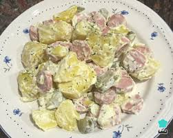

Menú
Ensalda Cesar
Costo: $150

Es una ensalada de lechuga romana y croûtons con jugo de limón, aceite de oliva, huevo, salsa Worcestershire, anchoas, ajo, mostaza de Dijon, queso parmesano y pimienta negra. La ensalada César original no contiene pollo, aunque se le suele agregar habitualmente.
Ensalda Rusa
Costo: $80

Esta ensalada de papas y verduras con un aderezo de mayonesa es muy conocida en Rusia, por toda Europa y también en América del Sur.
Ensalda Kartoffelsalat
Costo: $120
La Kartoffelsalat (en Austria denominada también Erdäpfelsalat) o ensalada de papas es uno de los platos más conocidos en la cocina alemana. Se trata de un plato compuesto principalmente de varios tipos de papas cocidas acompañadas de diferentes ingredientes.